단일 선택
SELECT · 정해 둔 선택지 중 하나를 고르는 입력란
단일 선택 필드란
- 1.1필드 추가와 속성 패널 구성
1.1필드 추가와 속성 패널 구성
개요
단일 선택(SELECT) 은 미리 정해 둔 선택지 중 하나를 고르는 입력란입니다. 흡연 여부 · 중증도 등급 · 예/아니오처럼 정해진 범주로 답하는 항목에 사용합니다. 처음에는 드롭다운으로 표시되며 라디오 버튼으로 바꿀 수도 있습니다. 3.3 여러 개를 고를 수 있어야 하면 다중 선택 타입을, 숫자 등급을 매기는 항목이면 척도 타입을 사용합니다.
화면 설명
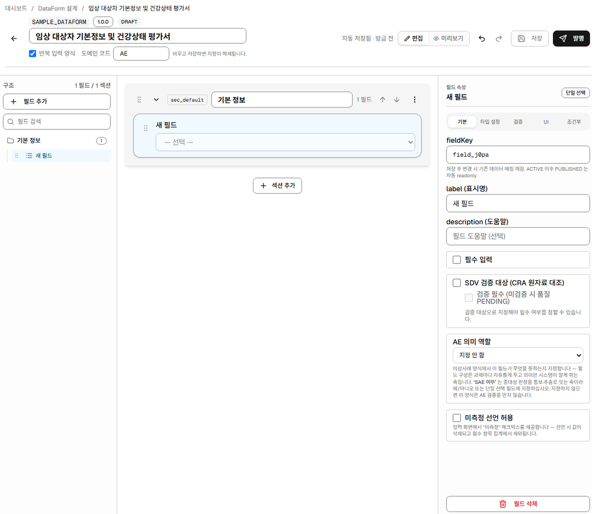
[+ 필드 추가] — 여기에서 타입을 지정하면 필드가 생성됩니다.
구조 트리에 새 필드가 추가됩니다.
WYSIWYG 캔버스에 드롭다운이 표시되고 — 선택 — 안내가 보입니다. 선택지는 아직 비어 있습니다. 3.2
fieldKey — 값이 저장되는 실제 키입니다. 2.1
label (표시명) · description (도움말) — 화면에 표시되는 이름과 보조 설명입니다. 2.1
필수 입력 · SDV 검증 대상 — 2.2 · 2.3 에서 다룹니다.
AE 의미 역할 — 화면 안내가 “‘SAE 여부’ 는 중대성 판정을 통보 · 추출로 잇는 축이라 예/아니오 또는 단일 선택 필드에 지정하십시오” 라고 밝히듯, 이 타입이 지정 대상입니다. 이상사례 양식을 쓰는 프로젝트에서만 사용합니다.
미측정 선언 허용 — 2.4 에서 다룹니다.
타입 배지 「단일 선택」 — 선택한 필드의 타입입니다. 추가한 뒤에는 변경할 수 없습니다.
속성 탭 5종 — 기본 · 타입 설정 · 검증 · UI · 조건부. 이 매뉴얼 2~6장이 각 탭에 대응합니다.
유의사항
필수 확인 데이터 손상 · 폼 완료 불가
- • 타입은 추가한 뒤에 변경할 수 없습니다. 잘못 선택했다면 필드를 삭제하고 다시 추가하십시오. (테이블형 · 필드 그룹의 하위 항목만 예외로 타입 변경이 가능합니다.)
- • 저장되는 값은 선택지의
value입니다. 화면에 보이는 문구(label)가 아니라 옵션에 지정한 저장값이 데이터에 들어갑니다 — 이 구분이 이 타입을 다룰 때 가장 자주 혼동되는 지점입니다. 3.2 - • 발행(PUBLISH) 이후에는 구조를 변경할 수 없습니다. 운영 중 수정이 필요하면 새 버전을 발행하십시오.
기본 탭 — 이름 · 필수 · 검증 대상 · 미측정
- 2.1fieldKey · 표시명 · 도움말
- 2.2필수 입력
- 2.3SDV 검증 대상 (CRA 원자료 대조)
- 2.4미측정 선언 허용
2.1fieldKey · 표시명 · 도움말
개요
필드의 이름을 정하는 영역입니다. 저장 키(fieldKey)와 화면에 표시되는 이름(label)은 서로 다른 값이며, 변경해도 되는 시점이 다릅니다.
화면 설명
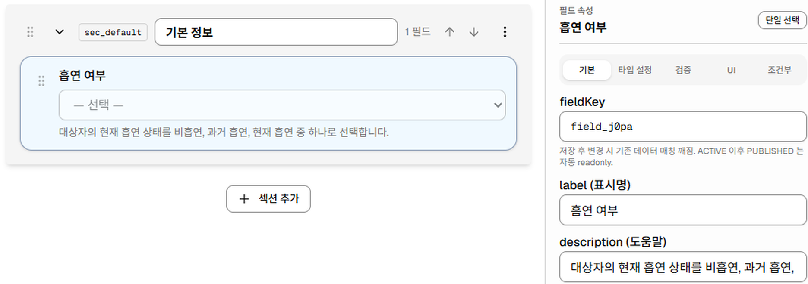
label (표시명) — 입력 화면에 표시할 항목 이름을 입력합니다.
캔버스 필드 제목으로 표시됩니다.
description (도움말) — 표시명 아래에 표시할 보조 설명을 입력합니다. 공란으로 두면 표시되지 않습니다.
드롭다운 아래 회색 글씨로 표시됩니다.
fieldKey — 값이 저장되는 실제 키입니다. 필드를 추가하면 field_j0pa 처럼 자동으로 부여되며 영문 · 숫자 · 밑줄로 변경할 수 있습니다. 화면에는 표시되지 않습니다 — 아래 유의사항을 반드시 확인하십시오.
유의사항
필수 확인 데이터 손상 · 폼 완료 불가
- • ⛔ 저장한 뒤에는 fieldKey 를 변경하지 마십시오. 화면 안내와 같이 “저장 후 변경 시 기존 데이터 매칭 깨짐” — 이미 입력된 값이 새 키와 연결되지 않아 사실상 유실됩니다.
- • 폼이 ACTIVE 이후 PUBLISHED 상태가 되면 fieldKey 입력란은 자동으로 읽기 전용이 됩니다. 시스템이 변경을 막아 주는 것은 그 이후이므로, 그전까지는 사용자가 직접 주의해야 합니다.
오해하기 쉬운 동작
- • 선택지의 뜻은 도움말에 적으십시오. 캡처처럼 “비흡연, 과거 흡연, 현재 흡연 중 하나로 선택합니다” 라고 적어 두면 어떤 범주로 나뉘는지 한눈에 들어옵니다. 선택지 라벨만으로는 경계가 모호한 경우가 많습니다.
- • 표시명은 언제든 변경해도 안전합니다. 저장 키가 아니라 화면 문구이기 때문입니다.
2.2필수 입력
개요
이 항목을 반드시 선택해야 하는지 정합니다. 선택하면 입력 화면에서 아무 선택지도 고르지 않았을 때 저장이 차단됩니다.
화면 설명
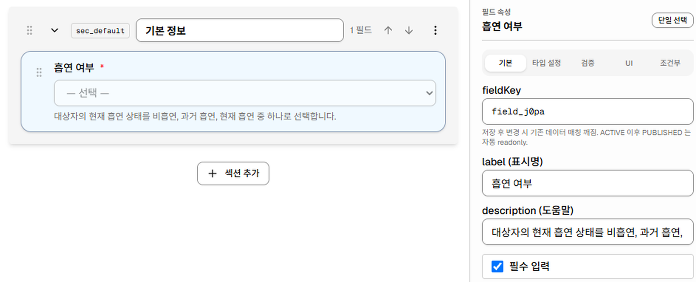
필수 입력 — 선택하면 이 필드가 필수가 됩니다.
캔버스 표시명 오른쪽에 빨간 별표(*) 가 표시되어 사용자에게 필수임을 알립니다.
유의사항
필수 확인 데이터 손상 · 폼 완료 불가
- • ⛔ 필수로 지정하기 전에 선택지가 모든 경우를 덮는지 확인하십시오. 해당하는 선택지가 없으면 기록자는 아무거나 고르거나 폼을 끝내지 못합니다. 필요하면 “해당 없음” · “미상” 같은 선택지를 옵션에 추가하거나3.2, 조건부 표시로 해당자에게만 묻거나6장, 미측정 선언을 허용하십시오2.4.
- • 조건부 표시로 숨겨진 필드는 필수 검증이 면제됩니다. 6장 반면 UI 탭의 숨김은 제외되지 않으므로 혼동하지 마십시오. 5.3
오해하기 쉬운 동작
- • “해당 없음” 을 선택지로 둘지, 미측정 선언으로 둘지는 뜻이 다릅니다 — 선택지는 평가 결과로 저장되고, 미측정 선언은 평가하지 못함으로 기록되며 필수 집계에서 빠집니다. 2.4
참고
- • 필수 여부는 폼 완료 판정에 사용됩니다. 아무 선택지도 고르지 않으면 값이 비어 있는 것으로 처리됩니다.
2.3SDV 검증 대상 (CRA 원자료 대조)
개요
SDV(Source Data Verification) 는 임상연구모니터요원(CRA)이 입력값을 의료기관 원자료와 대조하는 절차입니다. 이 필드를 그 대상으로 지정할지 여기에서 정합니다. 이 설정은 모든 필드 타입에서 동일하므로 화면도 타입과 무관하게 같습니다.
화면 설명


SDV 검증 대상 (CRA 원자료 대조) — 선택하면 이 필드가 CRA 의 대조 목록에 포함됩니다.
선택 상태로 바뀌면서 하위 항목이 활성화됩니다.
검증 필수 (미검증 시 품질 PENDING) — ①을 선택한 뒤에야 지정할 수 있습니다. 선택하면 CRA 가 대조를 마치기 전까지 해당 데이터의 품질 상태가 PENDING 에 머무릅니다.
①을 선택하기 전에는 ②가 흐리게 비활성입니다. 화면 안내와 같이 “검증 대상으로 지정해야 필수 여부를 정할 수 있습니다.”
유의사항
필수 확인 데이터 손상 · 폼 완료 불가
- • 값이 변경되면 검증이 해제됩니다. 선택지를 바꾸면 품질 상태가 PENDING 으로 되돌아가고 CRA 가 다시 대조해야 합니다.
오해하기 쉬운 동작
- • 범주 판정은 대조 기준을 미리 정해 두십시오. 「현재 흡연」 과 「과거 흡연」 처럼 판단이 들어가는 선택지는 원자료를 보는 사람에 따라 다르게 읽힐 수 있습니다 — 도움말2.1에 판정 기준을 적어 두면 대조가 빨라집니다.
- • SDV 는 입력한 사람이 직접 수행할 수 없습니다. 시스템이 교차 검증(Cross-User SoD)을 강제하므로 입력자와 검증자는 반드시 달라야 합니다.
참고
- • 품질 상태는 PENDING → VERIFIED → CLEAN 순으로 진행됩니다. 검증 필수로 지정한 필드가 하나라도 미검증이면 해당 데이터는 CLEAN 이 되지 못합니다.
2.4미측정 선언 허용
개요
답을 확인할 수 없는 경우를 값으로 구분해 기록하는 기능입니다. 아무 선택지도 고르지 않으면 “아직 입력하지 않음” 과 “확인했으나 알 수 없음” 을 구별할 수 없습니다. 이 선언이 그 둘을 구분해 줍니다.
화면 설명

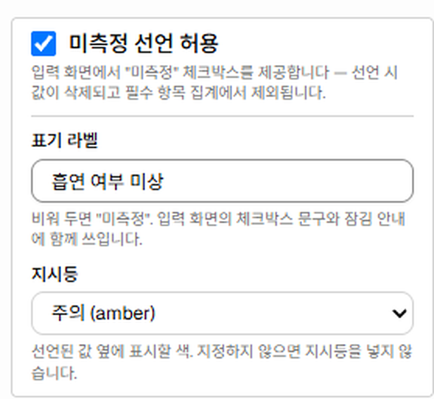
미측정 선언 허용 — 선택하면 입력 화면에 “미측정” 체크박스가 생성되고, 아래 두 항목이 표시됩니다.
표기 라벨 — 공란으로 두면 기본값 “미측정” 이 적용됩니다.
흡연 여부 미상 으로 변경하면 이 문구가 입력 화면 체크박스와 잠김 안내에 함께 적용됩니다.
지시등 — 기본값은 없음 입니다.
주의(amber) 로 변경하면 선언된 값 옆에 해당 색 표시가 나타납니다.
유의사항
필수 확인 데이터 손상 · 폼 완료 불가
- • “미상” 을 선택지로 둘지 선언으로 둘지 먼저 정하십시오. 둘 다 두면 기록자가 어느 쪽을 써야 할지 헷갈리고, 같은 상황이 두 가지로 나뉘어 저장됩니다. 한 가지 방식으로 통일하고 도움말에 밝히십시오. 2.2
- • 선언하면 값이 삭제됩니다. 화면 안내와 같이 — “선언 시 값이 삭제되고 필수 항목 집계에서 제외됩니다.”
오해하기 쉬운 동작
- • 선언된 필드는 필수 집계에서 제외됩니다. 따라서 필수 항목이어도 폼을 완료할 수 있습니다.
참고
- • 지시등을 지정하지 않으면 색 표시가 적용되지 않습니다. 강조가 필요하면 주의(amber) 등을 선택하십시오.
타입 설정 탭 — 선택지 만들기
- 3.1타입 설정 탭 전체 구성
- 3.2옵션 목록 (value · label · 활성 · 순서 · 삭제)
- 3.3표시 방식 (displayStyle)
- 3.4옵션 출력 방향 (라디오 전용)
- 3.5기본값 (defaultValue)
3.1전체 구성
개요
선택지를 만드는 탭입니다. 다른 타입과 달리 길이 · 범위 · 형식이 없고, 어떤 선택지를 어떤 모습으로 보여 줄지만 정합니다. 이 타입에서 실제로 사용하는 항목은 네 가지입니다.
화면 설명
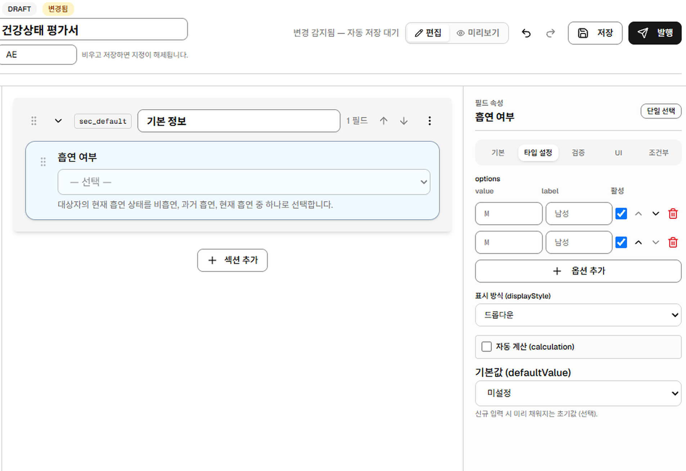
options — 선택지 목록입니다. value · label · 활성 세 칸과 순서 · 삭제 버튼으로 이루어집니다. 3.2
[+ 옵션 추가] — 선택지를 한 줄 더 추가합니다. 3.2
표시 방식 (displayStyle) — 드롭다운 또는 라디오 중에서 고릅니다. 3.3
자동 계산 (calculation) — 항목은 표시되지만 이 타입에서는 사용하지 않습니다. 다른 필드 값으로 수치를 산출하는 기능이므로 숫자 타입에서 사용하십시오.
기본값 (defaultValue) — 신규 입력 시 미리 골라 둘 선택지입니다. 3.5
유의사항
필수 확인 데이터 손상 · 폼 완료 불가
- • 처음에는 빈 옵션 두 줄이 놓여 있습니다. 흐린 글씨
M·남성은 입력 예시이며 설정된 값이 아닙니다. 그대로 두고 저장하면 선택지가 없는 필드가 됩니다. - • 선택지는 이 화면에서 직접 나열합니다. 여러 폼에서 같은 선택지를 쓰더라도 각각 입력해야 하므로, 표기와 저장값을 폼마다 똑같이 맞추는 데 주의하십시오. 3.2
오해하기 쉬운 동작
- • 라디오를 고르면 항목이 하나 더 나타납니다. 「옵션 출력 방향」 은 표시 방식이 라디오일 때만 표시됩니다. 3.4
참고
- • 이 탭의 구성은 필드를 생성할 때 선택한 타입으로 고정됩니다. 타입이 다르면 이 탭의 항목도 달라집니다.
3.2옵션 목록 (value · label · 활성 · 순서 · 삭제)
개요
선택지를 한 줄에 하나씩 만듭니다. 한 줄은 저장값(value) · 표시 문구(label) · 활성 여부로 이루어지며, 오른쪽 버튼으로 순서를 바꾸거나 줄을 지울 수 있습니다. 이 화면이 이 타입의 핵심입니다.
화면 설명
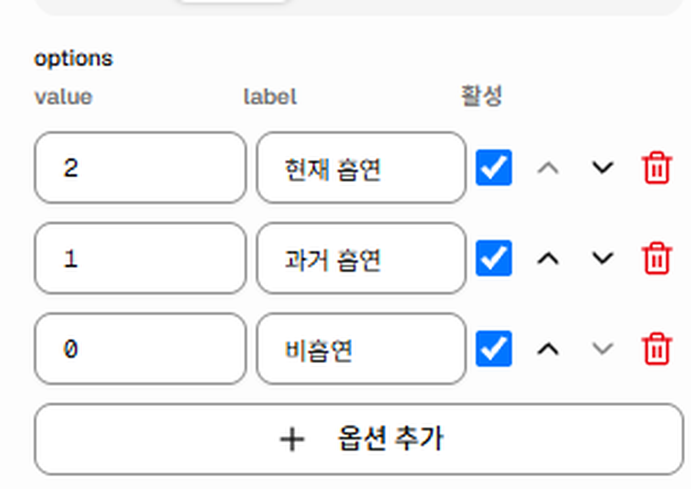
value — 데이터에 저장되는 값입니다. 캡처는 2 · 1 · 0 입니다. 조건부 표시6.2나 검증 규칙4.3에서 이 필드를 참조할 때도 이 값을 사용합니다.
label — 화면에 보이는 문구입니다. 캡처는 현재 흡연 · 과거 흡연 · 비흡연 입니다. 데이터에는 들어가지 않습니다.
활성 · 순서(↑↓) · 삭제(🗑) — 활성을 해제하면 그 선택지를 지우지 않고 목록에서 빼 둘 수 있습니다. 화살표로 표시 순서를 바꾸고, 휴지통으로 줄을 삭제합니다.
[+ 옵션 추가] — 선택지를 한 줄 더 추가합니다. 필요한 만큼 반복합니다.
유의사항
필수 확인 데이터 손상 · 폼 완료 불가
- • ⛔ 발행한 뒤에 value 를 바꾸지 마십시오. 이미
2로 저장된 데이터가 있는데 value 를S로 바꾸면, 기존 값이 어느 선택지인지 알 수 없게 됩니다. 표기만 고치고 싶다면 label 만 바꾸십시오 — label 은 언제든 안전합니다. - • ⛔ value 를 정할 때 분석까지 생각하십시오. 캡처처럼
0 · 1 · 2로 두면 등급 순서가 값에 담기지만, 순서가 없는 범주에 숫자를 쓰면 없는 순서를 읽게 만듭니다. 순서가 없다면NEVER·FORMER처럼 뜻이 드러나는 문자열이 안전합니다. - • 이미 저장된 값이 있는 선택지의 활성을 해제할 때는 주의하십시오. 새 입력에서는 고를 수 없게 되지만 기존 데이터는 그대로 남습니다 — 목록에 없는 값이 자료에 섞이게 되므로 영향을 먼저 확인하십시오.
오해하기 쉬운 동작
- • 순서는 기록자가 읽는 순서입니다. 중증도처럼 단계가 있는 항목은 약한 쪽에서 강한 쪽으로 일관되게 배열하십시오 — 폼마다 순서가 다르면 오선택이 늘어납니다.
세 칸의 역할
| 칸 | 들어가는 것 | 데이터에 저장되는가 | 바꿔도 되는가 |
|---|---|---|---|
| value | 저장값 (예: 2) | 저장됨 | 발행 후 변경 금지 |
| label | 화면 문구 (예: 현재 흡연) | 저장되지 않음 | 언제든 변경 가능 |
| 활성 | 선택지 제공 여부 | 저장되지 않음 | 운영 중 변경은 신중히 |
3.3표시 방식 (displayStyle)
개요
선택지를 어떤 모습으로 보여 줄지 정합니다. 드롭다운(접혀 있다가 펼쳐짐)과 라디오(선택지가 모두 보임) 중에서 고릅니다. 저장되는 값은 어느 쪽이든 같습니다.
화면 설명
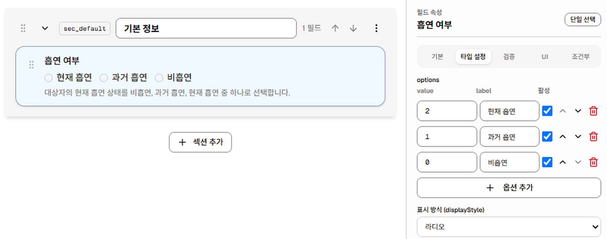
표시 방식 (displayStyle) — 선택 목록에서 고릅니다. 기본값은 드롭다운 이며 캡처는 라디오 로 바꾼 상태입니다.
캔버스가 라디오 버튼 세 개로 바뀌어 선택지가 모두 드러납니다. 드롭다운일 때는 — 선택 — 한 줄만 보였습니다.
유의사항
오해하기 쉬운 동작
- • 선택지가 적으면 라디오가 낫습니다. 펼치는 동작 없이 바로 고를 수 있고, 어떤 선택지가 있는지 한눈에 보여 오선택이 줄어듭니다.
- • 선택지가 많으면 드롭다운이 낫습니다. 라디오로 두면 화면이 길어져 뒤의 항목이 밀립니다.
- • 라디오를 고르면 「옵션 출력 방향」 항목이 나타납니다. 한 줄에 몇 개씩 놓을지 정할 수 있습니다. 3.4
참고
- • 표시 방식을 바꿔도 저장된 값은 바뀌지 않습니다. 화면에 보이는 모습만 달라지므로 운영 중에 바꾸어도 데이터에는 영향이 없습니다.
두 방식의 차이
| 표시 방식 | 화면 | 쓰기 좋은 경우 |
|---|---|---|
| 드롭다운 (기본) | 접혀 있다가 펼쳐짐 | 선택지가 많을 때 · 폼을 짧게 유지할 때 |
| 라디오 | 선택지가 모두 보임 | 선택지가 적을 때(2~5개) · 빠르게 고르게 할 때 |
3.4옵션 출력 방향 (라디오 전용)
개요
라디오 버튼을 한 줄에 몇 개씩 놓을지 정합니다. 표시 방식이 라디오일 때만 나타나는 항목이며, 드롭다운에서는 보이지 않습니다.
화면 설명
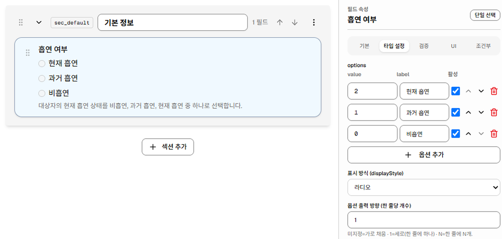
옵션 출력 방향 (한 줄당 개수) — 숫자를 입력합니다. 캡처는 1 입니다.
라디오 버튼이 한 줄에 하나씩 세로로 배치됩니다. 3.3 에서는 가로로 나란히 있었습니다.
유의사항
필수 확인 데이터 손상 · 폼 완료 불가
- • 표시 방식을 드롭다운으로 되돌리면 이 설정은 화면에서 사라집니다. 다시 라디오로 바꾸면 값이 그대로 남아 있는지 확인하십시오. 3.3
오해하기 쉬운 동작
- • 문구가 긴 선택지는 세로(1)로 두십시오. 가로로 채우면 줄이 바뀌는 위치가 들쭉날쭉해 어떤 문구가 어느 버튼에 붙는지 헷갈립니다.
- • 중요한 판정 항목은 세로 배치가 안전합니다. 선택지가 위아래로 나란히 놓이면 옆 버튼을 잘못 누르는 실수가 줄어듭니다.
- • 레이아웃 너비5.2와 함께 영향을 줍니다. 필드 폭을 좁혀 두면 지정한 개수가 한 줄에 들어가지 못할 수 있습니다.
입력값에 따른 배치
| 입력 | 배치 | 쓰기 좋은 경우 |
|---|---|---|
| 공란 (미지정) | 가로로 채움 — 폭이 남는 만큼 이어 붙임 | 선택지 문구가 짧을 때 |
1 | 세로 — 한 줄에 하나 | 문구가 길거나 오선택을 줄여야 할 때 |
N | 한 줄에 N 개 | 2열 · 3열로 가지런히 놓고 싶을 때 |
3.5기본값 (defaultValue)
개요
새 입력을 시작할 때 미리 골라 둘 선택지입니다. 만들어 둔 옵션 중에서 고릅니다. 이 타입은 설정 결과를 편집 화면에서 확인할 수 없어 [미리보기] 로 전환해야 합니다.
화면 설명
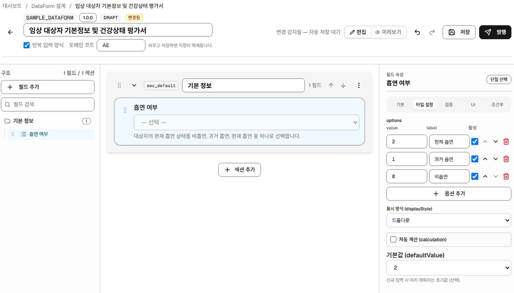
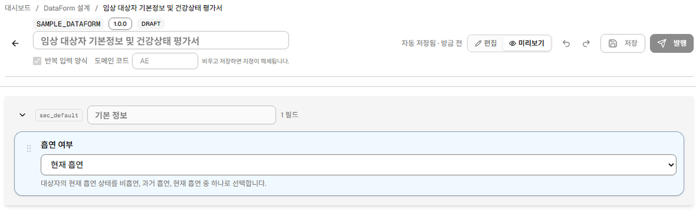
기본값 (defaultValue) — 신규 입력 시 미리 선택될 값을 고릅니다. 목록에는 저장값(value) 이 표시되므로 캡처에서는 2 를 골랐습니다. (선택)
편집 화면 캔버스에는 여전히 — 선택 — 만 보입니다. 설정이 반영되지 않은 것이 아니라 편집 화면이 기본값을 그리지 않기 때문입니다.
[미리보기] — 상단에서 미리보기로 전환합니다.
드롭다운에 「현재 흡연」 이 선택돼 있습니다. 설정할 때는 value(2) 로 고르고 화면에는 label 로 보이는 것을 여기에서 확인할 수 있습니다.
유의사항
필수 확인 데이터 손상 · 폼 완료 불가
- • ⛔ 판단이 필요한 항목에는 기본값을 지정하지 마십시오. 미리 골라져 있으면 기록자가 확인하지 않고 지나칠 수 있고, 실제로 평가했는지도 구분할 수 없게 됩니다. 특히 안전성 · 유효성 판정 항목에는 두지 마십시오.
- • 기본값은 value 로 지정하고 화면에는 label 로 보입니다. 둘을 혼동해 엉뚱한 선택지가 기본으로 잡히지 않도록, 지정한 뒤 미리보기에서 문구까지 확인하십시오. 3.2
오해하기 쉬운 동작
- • 편집 화면만 보고 설정이 안 됐다고 판단하지 마십시오. 이 타입은 기본값이 편집 화면 캔버스에 나타나지 않습니다 — 반드시 [미리보기] 로 확인하십시오.
- • 기본값은 새로 생성하는 입력에만 적용됩니다. 이미 저장된 데이터는 변경되지 않습니다.
검증 탭 — 저장 전 값 검사
- 4.1검증 규칙이 없는 상태
- 4.2규칙 추가
- 4.3규칙 작성 완료 — 다른 필드와 비교
4.1검증 규칙이 없는 상태
개요
저장하기 전에 값이 조건에 맞는지 검사하는 규칙을 모아 두는 탭입니다. 단일 선택은 만들어 둔 선택지에서만 고를 수 있어 범위 검사가 필요 없는 대신, 다른 필드와의 관계를 검사할 때 이 탭을 사용합니다. 4.3
화면 설명
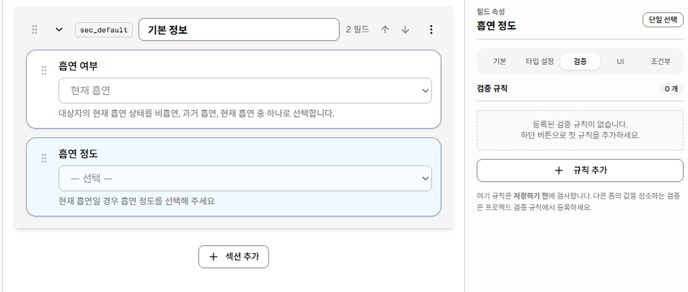
[+ 규칙 추가] — 첫 규칙을 생성합니다. 선택한 뒤의 화면은 4.2 에서 설명합니다.
검증 규칙 영역과 등록된 규칙 수입니다. 처음에는 0 개 입니다.
규칙이 없으면 “등록된 검증 규칙이 없습니다. 하단 버튼으로 첫 규칙을 추가하세요.” 안내가 표시됩니다.
하단 안내 — “여기 규칙은 저장하기 전에 검사합니다. 다른 폼의 값을 참조하는 검증은 프로젝트 검증 규칙에서 등록하세요.”
유의사항
필수 확인 데이터 손상 · 폼 완료 불가
- • ⛔ 다른 폼의 값을 참조하는 검증은 여기서 만들 수 없습니다. 그런 규칙은 「프로젝트 검증 규칙」 화면에서 등록하십시오. 이 탭은 같은 폼 안에서 완결되는 검사만 다룹니다.
오해하기 쉬운 동작
- • 캡처에는 필드가 둘입니다. 「흡연 여부」 와 「흡연 정도」 — 뒤의 필드가 앞의 필드에 따라 의미가 달라지는 관계라, 4.3 에서 두 필드를 묶는 규칙을 만듭니다.
- • 규칙을 만들지 않아도 됩니다. 선택지만으로 충분한 항목이 대부분입니다 — 꼭 필요한 관계가 있을 때만 사용하십시오.
4.2규칙 추가
개요
4.1 의 [+ 규칙 추가] 를 선택하면 규칙 1 블록이 생성됩니다. 처음에는 값 범위 가 잡혀 있지만, 단일 선택에서 실제로 쓰는 것은 다른 필드와 비교 입니다 — ruleType 을 바꾸면 화면이 달라집니다. 4.3
화면 설명
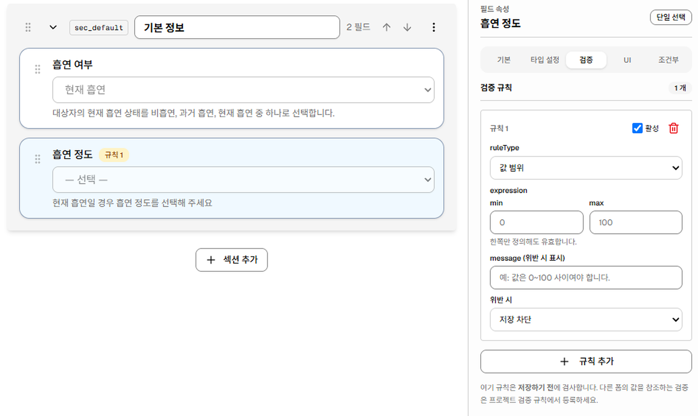
[+ 규칙 추가] — 규칙을 하나 더 생성합니다. (4.1 에서 선택한 것과 같은 버튼입니다.)
「규칙 1」 블록이 생성되고, 캔버스 표시명 옆에 「규칙 1」 배지가 표시됩니다.
규칙 수가 1 개 로 변경됩니다.
활성 체크박스와 삭제 아이콘 — 규칙을 지우지 않고 잠시 중단할 수 있습니다.
ruleType — 규칙의 종류입니다. 처음에는 값 범위 가 선택돼 있습니다.
min — 값 범위를 골랐을 때 나타나는 하한 칸입니다.
max — 같은 조건에서 나타나는 상한 칸입니다.
흐린 글씨 0 · 100 과 “예: 값은 0~100 사이여야 합니다.” 는 입력 예시이며 설정된 값이 아닙니다.
message (위반 시 표시) — 규칙을 위반했을 때 사용자에게 표시할 문구입니다.
위반 시 — 저장 차단 또는 경고 중에서 선택합니다. (ruleType 에 따라 고를 수 없게 되기도 합니다 — 4.3)
유의사항
필수 확인 데이터 손상 · 폼 완료 불가
- • ⛔ 단일 선택에 「값 범위」 를 그대로 쓰지 마십시오. 저장값이
NEVER처럼 문자열이면 크기 비교가 성립하지 않고, 숫자로 두었더라도 선택지 밖의 값은 애초에 들어올 수 없어 검사할 것이 없습니다. 3.2 - • message 를 공란으로 두면 사용자는 차단된 이유를 알 수 없습니다. 반드시 입력하십시오.
오해하기 쉬운 동작
- • 이 타입에서 쓸모 있는 것은 「다른 필드와 비교」 입니다. “앞 질문에 특정 값을 골랐을 때만 이 항목에 답할 수 있다” 같은 관계를 검사합니다. 4.3
- • 규칙은 여러 개 만들 수 있고, 활성 상태인 규칙을 모두 만족해야 저장됩니다.
4.3규칙 작성 완료 — 다른 필드와 비교
개요
ruleType 을 다른 필드와 비교 로 바꾸면 화면이 완전히 달라집니다. 같은 폼의 다른 필드 값과 견주어 검사하므로, 앞 질문의 답에 따라 이 항목의 가부가 갈리는 관계를 표현할 수 있습니다.
화면 설명
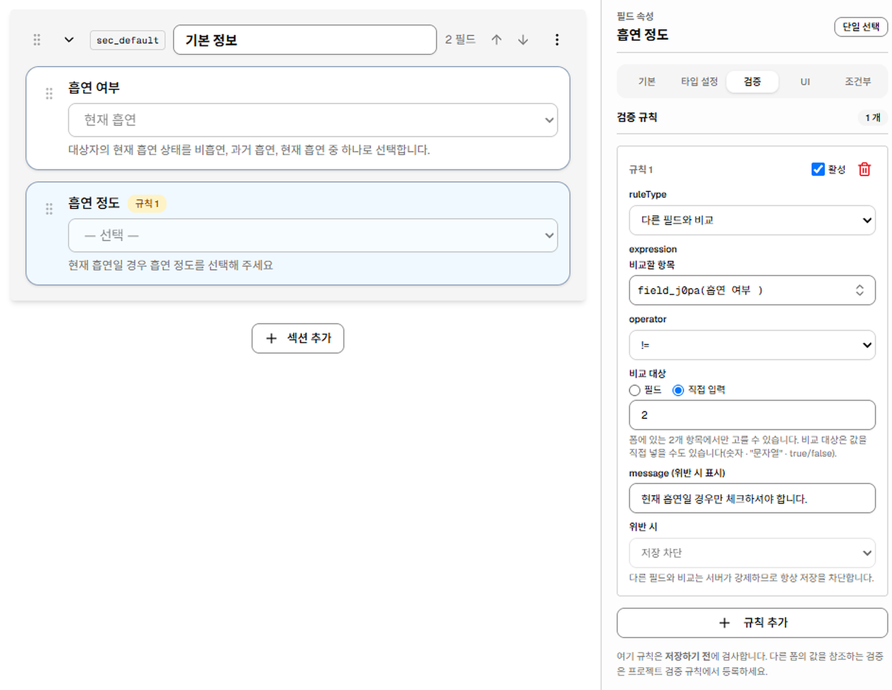
ruleType = 다른 필드와 비교 — 선택하면 아래 칸이 비교용으로 바뀝니다.
비교할 항목 — 같은 폼의 다른 필드를 고릅니다. 캡처는 field_j0pa(흡연 여부) 입니다.
operator — 비교 방법입니다. 캡처는 !=(같지 않음) 입니다.
비교 대상 — 필드 와 직접 입력 중에서 고릅니다. 캡처는 직접 입력으로 2 를 넣었습니다 — 「흡연 여부」 의 저장값(value) 입니다. 3.2
화면 안내 — “폼에 있는 2개 항목에서만 고를 수 있습니다. 비교 대상은 값을 직접 넣을 수도 있습니다(숫자 · "문자열" · true/false).”
message (위반 시 표시) — 캡처는 현재 흡연일 경우만 체크하셔야 합니다. 입니다.
위반 시 — 회색으로 비활성입니다. 화면 안내와 같이 “다른 필드와 비교는 서버가 강제하므로 항상 저장을 차단합니다.” — 이 규칙에서는 경고를 고를 수 없고 저장 차단으로 고정됩니다.
유의사항
필수 확인 데이터 손상 · 폼 완료 불가
- • ⛔ 조건의 방향을 발행 전에 반드시 확인하십시오. 검증 규칙은 만족해야 하는 조건으로 적는 것이 원칙인데, 캡처의 설정(
흡연 여부 != 2)과 message(“현재 흡연일 경우만”)는 서로 반대로 읽힙니다. 부등호 하나로 뜻이 뒤집히므로, 설정한 뒤 미리보기에서 실제 동작을 확인하십시오. - • ⛔ 비교 대상에는 label 이 아니라 value 를 넣습니다. 「현재 흡연」 이라고 적으면 비교가 성립하지 않습니다 — 옵션 목록에서 저장값을 먼저 확인하십시오. 3.2
오해하기 쉬운 동작
- • 이 규칙은 경고로 둘 수 없습니다. 위반 시가 저장 차단으로 고정되므로, 반드시 막아야 하는 관계에만 사용하십시오. 참고로만 알리고 싶다면 조건부 표시6장로 아예 묻지 않는 편이 낫습니다.
- • 같은 관계라면 조건부 표시가 먼저입니다 — 애초에 묻지 않으면 잘못 입력할 일도 없습니다. 6장
UI 탭 — 화면 배치와 안내 문구
- 5.1UI 탭 전체 구성
- 5.2레이아웃 너비
- 5.3읽기 전용 · 숨김
- 5.4placeholder · helpText
5.1전체 구성
개요
값 자체가 아니라 화면에 어떻게 배치하고 어떻게 안내할지를 정하는 탭입니다. 이 탭의 설정은 저장되는 데이터 자체를 변경하지 않습니다. 다만 숨김은 화면에서만 감추고 필수 집계에서는 제외되지 않으므로 사용 전에 5.3 을 확인하십시오.
화면 설명
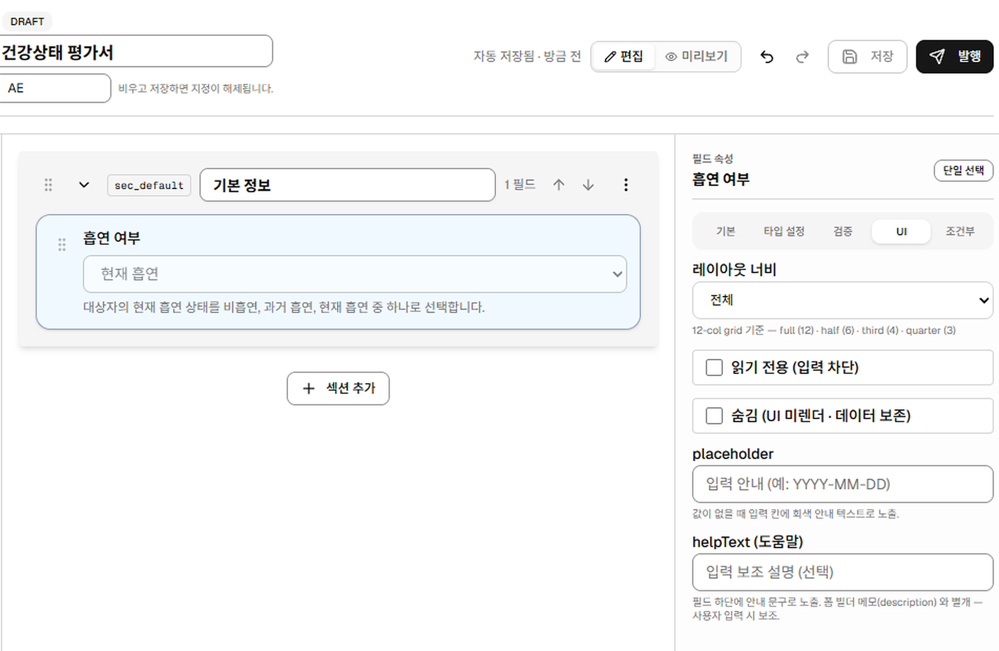
레이아웃 너비 — 한 줄에서 이 필드가 차지할 폭입니다. 선택지의 의미는 바로 아래 안내 “12-col grid 기준 — full (12) · half (6) · third (4) · quarter (3)” 에 적혀 있습니다. 5.2
읽기 전용 (입력 차단) — 표시하되 바꾸지 못하게 합니다. 5.3
숨김 (UI 미렌더 · 데이터 보존) — 화면에서 감춥니다. 5.3
placeholder — 값이 없을 때 표시되는 안내입니다. 이 타입에서는 — 선택 — 자리를 대체합니다. 5.4
helpText (도움말) — 필드 아래에 표시되는 안내 문구입니다. 5.4
유의사항
필수 확인 데이터 손상 · 폼 완료 불가
- • 표시 방식에 따라 폭의 영향이 달라집니다. 드롭다운은 좁혀도 한 줄이라 괜찮지만, 라디오는 선택지가 줄바꿈되어 배치가 흐트러집니다. 3.3 · 3.4 · 5.2
오해하기 쉬운 동작
- • 입력란에 흐리게 보이는
입력 안내 (예: YYYY-MM-DD)·입력 보조 설명 (선택)은 입력 예시이며 설정된 값이 아닙니다.
참고
- • 기본값은 레이아웃 너비 = 전체, 읽기 전용 · 숨김은 해제 상태입니다.
- • 선택지의 색이나 크기를 정하는 설정은 없습니다. 표시 방식3.3과 출력 방향3.4으로만 조절합니다.
5.2레이아웃 너비
개요
한 줄을 12칸으로 나눈 12-column grid 위에서 이 필드가 차지할 폭을 선택합니다. 표시 방식이 드롭다운이면 폭을 줄여도 한 줄이라 비교적 안전합니다.
화면 설명
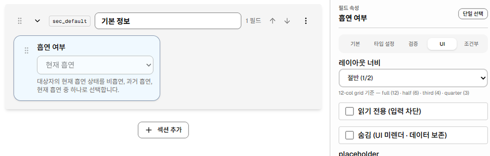
레이아웃 너비 — 선택 목록에서 폭을 지정합니다. 예시는 절반 (1/2) 입니다.
드롭다운이 절반 폭으로 줄어듭니다. 도움말 문구도 좁아진 폭에 맞춰 두 줄로 접힙니다.
유의사항
필수 확인 데이터 손상 · 폼 완료 불가
- • ⛔ 라디오로 표시하는 필드는 폭을 줄이지 마십시오. 선택지가 가로로 늘어서는데 폭이 모자라면 줄바꿈 위치가 들쭉날쭉해져 읽기 어려워집니다. 꼭 줄여야 한다면 출력 방향을 1(세로) 로 함께 바꾸십시오. 3.4
오해하기 쉬운 동작
- • 예/아니오처럼 짧은 선택지는 절반 폭에 잘 맞습니다. 관련된 두 질문을 나란히 두면 폼이 짧아집니다.
- • 폭을 줄이면 다음 필드가 같은 줄에 배치됩니다. 한 줄의 합이 12를 초과하면 다음 줄로 넘어갑니다.
참고
- • 화면 폭이 좁은 기기에서는 설정과 무관하게 한 줄에 하나씩 세로로 배치될 수 있습니다.
너비 선택지
| 선택 | 차지하는 칸 | 드롭다운에서 | 라디오에서 |
|---|---|---|---|
| 전체 | 12 | 여유 있음 | 선택지가 가로로 나란히 |
| 절반 (1/2) | 6 | 무난 — 짝 항목을 나란히 | 선택지가 줄바꿈될 수 있음 |
| 삼분 (1/3) | 4 | 문구가 길면 잘릴 수 있음 | 권장하지 않음 |
| 사분 (1/4) | 3 | 짧은 선택지만 | 권장하지 않음 |
5.3읽기 전용 · 숨김
개요
필드를 바꾸지 못하게 하거나 표시되지 않게 합니다. 둘 다 저장된 값은 그대로 보존됩니다.
화면 설명
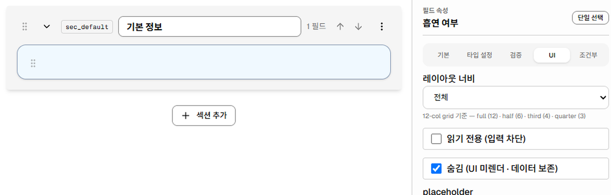
읽기 전용 (입력 차단) — 고른 값은 보이지만 사용자가 바꿀 수 없습니다. (이 캡처에서는 해제 상태)
숨김 (UI 미렌더 · 데이터 보존) — 입력 화면에 표시하지 않습니다. 이미 저장된 값은 삭제되지 않습니다.
캔버스에서 필드가 사라져 섹션이 비어 보입니다.
유의사항
필수 확인 데이터 손상 · 폼 완료 불가
- • ⛔ 필수 항목을 숨기지 마십시오. UI 탭의 숨김은 화면에서만 감추고 필수 집계에서는 제외되지 않습니다 — 사용자가 고를 수 없는 항목이 분모에 남아 폼을 완료할 수 없게 됩니다.
- • 숨김은 데이터를 삭제하지 않습니다. 화면에서만 사라지므로, 값을 삭제하려면 필드를 삭제해야 합니다.
오해하기 쉬운 동작
- • 조건부 탭의 숨김과 다릅니다. 조건이 맞지 않아 숨겨진 필드는 필수 집계에서 제외됩니다6장. 같은 “숨김” 이라는 표현을 사용하지만 검증에서의 처리가 정반대이므로 구분하십시오.
- • 읽기 전용과 숨김은 다릅니다. 읽기 전용은 “보여 주되 바꾸지 못함”, 숨김은 “보여 주지 않음” 입니다. 이미 고른 답을 확인시켜야 한다면 읽기 전용을 사용하십시오.
참고
- • 숨겨도 구조 패널에는 그대로 남아 있습니다 — 다시 선택해 설정을 되돌릴 수 있습니다.
5.4placeholder · helpText
개요
사용자에게 무엇을 고르면 되는지 알려 주는 두 가지 문구입니다. 이 타입의 placeholder 는 다른 타입과 역할이 다릅니다 — 입력란 안의 흐린 글씨가 아니라 아직 고르지 않은 상태의 문구를 바꿉니다.
화면 설명
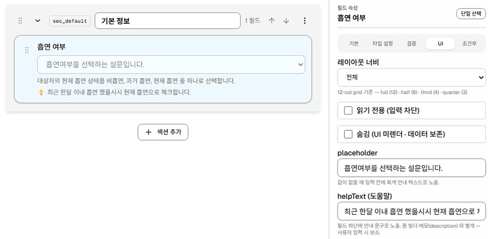
— 선택 — 자리를 대체하고, helpText 는 필드 아래에 붙는다placeholder — 미선택 상태에 표시할 문구를 입력합니다. 캡처는 흡연여부를 선택하는 설문입니다. 입니다.
드롭다운의 — 선택 — 자리를 대체합니다. 값을 고르면 그 문구는 사라지고 선택한 label 이 표시됩니다.
helpText (도움말) — 필드 아래에 표시할 안내 문구를 입력합니다. 캡처는 최근 한달 이내 흡연 했을시시 현재 흡연으로 체크합니다. 입니다.
필드 아래에 전구 아이콘(💡)과 함께 표시됩니다. 값을 골라도 사라지지 않습니다.
유의사항
필수 확인 데이터 손상 · 폼 완료 불가
- • 선택 기준은 helpText 에 적으십시오. 캡처의 “최근 한 달 이내 흡연했으면 현재 흡연으로 체크” 처럼 경계를 가르는 기준을 적어 두면 기록자 간 편차가 줄어듭니다 — 선택지 라벨만으로는 「현재」 와 「과거」 의 경계를 알 수 없습니다.
- • 라디오로 표시하면 placeholder 가 보이지 않습니다. 선택지가 모두 드러나 미선택 상태의 문구를 놓을 자리가 없기 때문입니다 — 라디오를 쓸 때는 안내를 helpText 에만 적으십시오. 3.3
오해하기 쉬운 동작
- • description 과 helpText 는 서로 다른 항목입니다. 화면 안내와 같이 — helpText 는 “폼 빌더 메모(description)와 별개 — 사용자 입력 시 보조” 입니다. 둘 다 입력하면 두 줄이 함께 표시됩니다.
세 문구의 역할
| 항목 | 표시 위치 | 단일 선택에서 | 설정 위치 |
|---|---|---|---|
| placeholder | 미선택 상태 문구 | — 선택 — 을 대체 | UI 탭 |
| helpText | 필드 아래 (💡) | 선택 기준을 적는다 | UI 탭 |
| description | 표시명 아래 | 어떤 범주로 나뉘는지 | 기본 탭 2.1 |
조건부 탭 — 다른 값에 따라 표시하기
- 6.1조건부 표시 활성
- 6.2조건 설정
6.1조건부 표시 활성
개요
다른 필드의 값에 따라 이 필드를 표시하거나 감추는 기능입니다. 「흡연 여부 = 현재 흡연」일 때만 흡연 정도를 묻는 식의 분기에 사용합니다 — 단일 선택끼리 이어 붙이기 좋은 기능입니다.
화면 설명
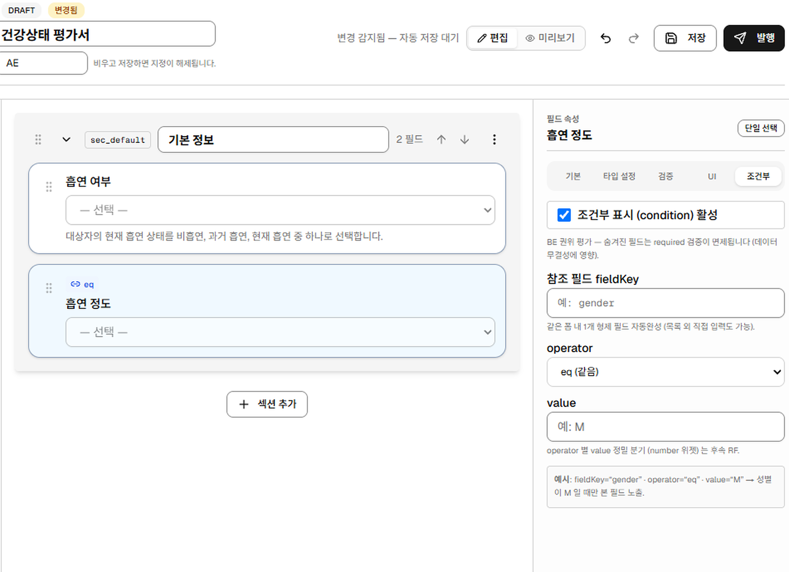
조건부 표시 (condition) 활성 — 선택하면 아래 조건 설정이 표시됩니다.
⚠ 화면 안내 — “숨겨진 필드는 required 검증이 면제됩니다 (데이터 무결성에 영향).” 조건 판정은 시스템이 수행합니다.
캔버스 필드 위에 🔗 eq 배지가 표시되어 조건이 적용되었음을 알립니다.
참조 필드 fieldKey — 조건의 기준이 되는 같은 폼 안의 다른 필드입니다. 같은 폼의 형제 필드가 자동완성되며, 목록에 없는 값은 직접 입력할 수도 있습니다.
operator — 비교 방법입니다. 기본값은 eq (같음) 입니다.
value — 비교할 값입니다.
하단 예시 — fieldKey="gender" · operator="eq" · value="M" → 성별이 M 일 때만 본 필드 노출.
유의사항
필수 확인 데이터 손상 · 폼 완료 불가
- • 조건을 설정하면 필수 검증이 면제될 수 있습니다. 조건이 맞지 않아 숨겨진 동안에는 그 필드가 필수여도 비어 있는 상태로 폼이 완료됩니다. 이는 결함이 아니라 의도된 동작입니다.
- • 이미 고른 값이 있는 상태에서 조건이 거짓이 되면 그 값은 화면에서 사라집니다. 분기 기준이 되는 필드를 나중에 바꿀 때 주의하십시오.
오해하기 쉬운 동작
- • 검증 규칙4.3보다 조건부 표시를 먼저 검토하십시오. 해당하지 않는 사람에게 아예 묻지 않으면 잘못 고를 일도, 저장이 막힐 일도 없습니다. 검증은 그래도 막아야 할 때 쓰는 마지막 장치입니다.
참고
- • 조건을 활성화하고 참조 필드를 공란으로 두면 조건이 성립하지 않습니다. 반드시 ②~④를 모두 입력하십시오. 6.2
6.2조건 설정
개요
6.1 에서 활성화한 조건을 끝까지 입력한 상태입니다. 이 설정이면 「흡연 여부」 필드의 값이 2 일 때만 이 필드가 입력 화면에 표시됩니다. 단일 선택을 참조할 때 value 와 label 의 구분이 가장 분명하게 드러나는 자리입니다.
화면 설명
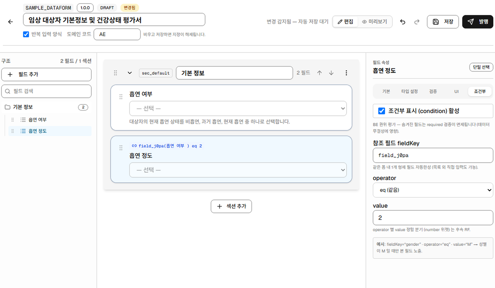
흡연 여부 가 2(현재 흡연) 일 때만 표시되도록 설정한 상태참조 필드 fieldKey = field_j0pa — 같은 폼의 「흡연 여부」 필드를 가리킵니다.
operator = eq (같음)
value = 2 — 화면에 보이는 「현재 흡연」 이 아니라 그 선택지의 저장값(value) 을 입력합니다. 3.2
①~③을 모두 입력한 결과 — 캔버스 배지가 🔗 field_j0pa(흡연 여부) eq 2 로 구체화됩니다.
참조 대상인 「흡연 여부」 필드가 같은 폼 안에 있어야 하며, 구조 트리에서 확인할 수 있습니다.
하단 예시 — fieldKey="gender" · operator="eq" · value="M" → 성별이 M 일 때만 본 필드 노출.
유의사항
필수 확인 데이터 손상 · 폼 완료 불가
- • ⛔ value 에는 label 이 아니라 저장값을 입력합니다. 「현재 흡연」 이라고 적으면 조건이 영원히 성립하지 않아 이 필드는 끝까지 표시되지 않습니다. 참조할 필드의 옵션 목록에서 저장값을 먼저 확인하십시오. 3.2
- • ⛔ 참조 필드의 value 를 바꾸면 조건이 조용히 깨집니다. 예를 들어 「현재 흡연」 의 value 를
2에서CURRENT로 바꾸면 이 조건은 오류 없이 그냥 성립하지 않게 됩니다 — 그래서 발행 후 value 변경이 위험합니다. 3.2 - • 참조 필드의 fieldKey 를 변경하거나 삭제해도 조건이 깨집니다. 조건은 표시명이 아니라 fieldKey 로 연결됩니다. 2.1
참고
- • 조건을 사용하면 폼이 짧아지고 불필요한 입력이 줄어듭니다. 다만 조건이 서로 충돌하면 끝까지 표시되지 않는 필드가 생기므로, 설정 후 미리보기로 반드시 확인하십시오.
부록
- 7.1설정 항목 한눈에 보기
7.1단일 선택 필드 설정 항목 한눈에 보기
탭별 설정 항목
| 탭 | 항목 | 무엇을 정하는가 | 본문 |
|---|---|---|---|
| 기본 | fieldKey | 값이 저장되는 실제 키 (저장 후 변경 금지) | 2.1 |
| label (표시명) | 화면에 표시되는 항목 이름 | 2.1 | |
| description (도움말) | 표시명 아래 보조 설명 — 어떤 범주로 나뉘는지 | 2.1 | |
| 필수 입력 | 반드시 선택해야 하는지 (선택지가 모든 경우를 덮는지 먼저) | 2.2 | |
| SDV 검증 대상 | CRA 원자료 대조 대상인지 · 검증 필수 여부 | 2.3 | |
| AE 의미 역할 | 이 타입이 지정 대상 — ‘SAE 여부’ 등 | 1.1 · ※ | |
| 미측정 선언 허용 | “미상” 을 값으로 남길 수 있는지 · 표기 라벨 · 지시등 | 2.4 | |
| 타입 설정 | options — value | 저장되는 값 (발행 후 변경 금지) | 3.2 |
| options — label | 화면에 보이는 문구 (언제든 변경 가능) | 3.2 | |
| options — 활성 · 순서 · 삭제 | 선택지 제공 여부 · 표시 순서 · 줄 삭제 | 3.2 | |
| 표시 방식 (displayStyle) | 드롭다운 / 라디오 | 3.3 | |
| 옵션 출력 방향 | 한 줄당 개수 — 라디오일 때만 표시 | 3.4 | |
| 기본값 (defaultValue) | 미리 골라 둘 선택지 (value 로 지정 · 미리보기에서 확인) | 3.5 | |
| 검증 | ruleType | 규칙 종류 — 이 타입에서는 다른 필드와 비교 를 사용 | 4.2 · 4.3 |
| 비교할 항목 · operator · 비교 대상 | 같은 폼의 다른 필드와 견주는 조건 (value 로 비교) | 4.3 | |
| message | 위반 시 사용자에게 표시할 문구 | 4.3 | |
| 위반 시 · 활성 | 다른 필드와 비교는 저장 차단 고정 · 규칙 활성 · 비활성 | 4.3 | |
| UI | 레이아웃 너비 | 12-col grid 상의 폭 (라디오면 줄이지 말 것) | 5.2 |
| 읽기 전용 | 보여 주되 바꾸지 못하게 | 5.3 | |
| 숨김 | 화면 미표시 (저장값 보존 · 필수 집계에는 유지) | 5.3 | |
| placeholder · helpText | placeholder 는 — 선택 — 대체 · 선택 기준은 helpText | 5.4 | |
| 조건부 | 조건 활성 | 조건부 표시 사용 여부 (필수 검증 면제) | 6.1 |
| 참조 필드 fieldKey | 조건의 기준이 되는 같은 폼의 필드 | 6.2 | |
| operator · value | 비교 방법과 비교할 값 (저장값을 입력) | 6.2 |
반드시 기억할 것
필수 확인 데이터 손상 · 폼 완료 불가
- • value 와 label 을 구분하십시오. 데이터에 저장되는 것은 value 이고, 조건부 표시 · 검증 · 기본값도 모두 value 로 지정합니다. 3.2 · 3.5 · 4.3 · 6.2
- • 발행한 뒤 value 를 바꾸지 마십시오. 기존 데이터의 뜻이 사라지고, 그 값을 참조하던 조건도 조용히 깨집니다. 3.2 · 6.2
- • 빈 옵션 두 줄을 그대로 두지 마십시오. 흐린
M·남성은 예시이며, 선택지가 없는 필드가 됩니다. 3.1 - • 「다른 필드와 비교」 는 조건의 방향을 발행 전에 확인하십시오 — 위반 시는 저장 차단 고정입니다. 4.3
- • 라디오 필드는 폭을 줄이지 마십시오 — 줄여야 하면 출력 방향을 1(세로)로. 3.4 · 5.2
오해하기 쉬운 동작
- • 기본값은 편집 화면에 나타나지 않습니다. [미리보기] 에서만 확인됩니다. 3.5
- • placeholder 는
— 선택 —을 대체하며, 라디오에서는 보이지 않습니다. 5.4
참고
- • 같은 관계라면 검증 규칙보다 조건부 표시가 먼저입니다 — 묻지 않으면 틀릴 일도 없습니다. 4.3 · 6.1
이 문서에서 다루지 않은 것
※ AE 의미 역할 — 이 타입이 지정 대상이지만 설정 과정 캡처가 없어 별도 절을 두지 않았습니다. 자세한 사용법은 AE 관련 문서를 참조하십시오. 1.1
공통 코드(CodeGroup) 연동 — 선택지를 프로젝트 공통 코드로 관리하는 길이 시스템에는 있으나 이 화면에는 항목이 없습니다. 폼마다 직접 나열해야 하므로 value 와 label 을 똑같이 맞추는지 확인하십시오. 3.2
자동 계산 (calculation) — 항목은 표시되지만 이 타입에서는 사용하지 않습니다. 숫자 타입에서 사용하십시오. 3.1
「값 범위」 검증 규칙 — 규칙 종류로 고를 수는 있으나 선택지에서만 고르는 타입이라 쓸 일이 없습니다. 4.2